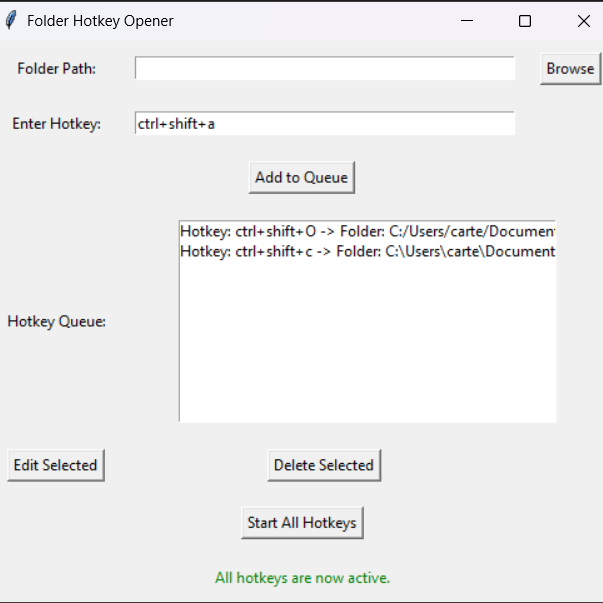

Hotkey Folder Macro
A Python desktop utility for opening frequently used folders through custom keyboard shortcuts.

Problem
My folder structure was nested enough that common folders took too many clicks to reach. I built this utility while taking an introductory Python course as a way to practice desktop automation on a practical problem.
Features
- Maps custom hotkeys to user-selected folders.
- Runs from the system tray after startup.
- Packages the workflow into a downloadable desktop utility.